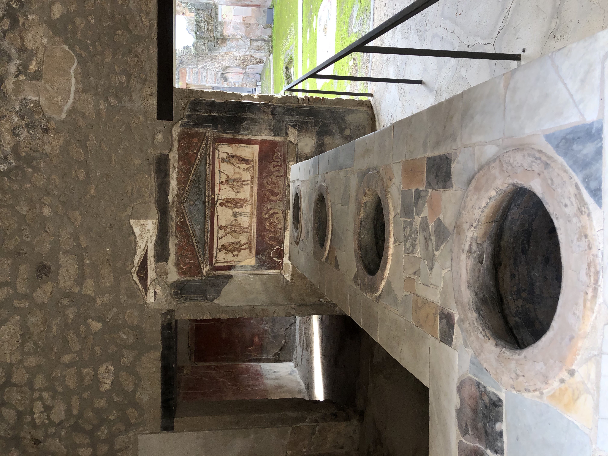
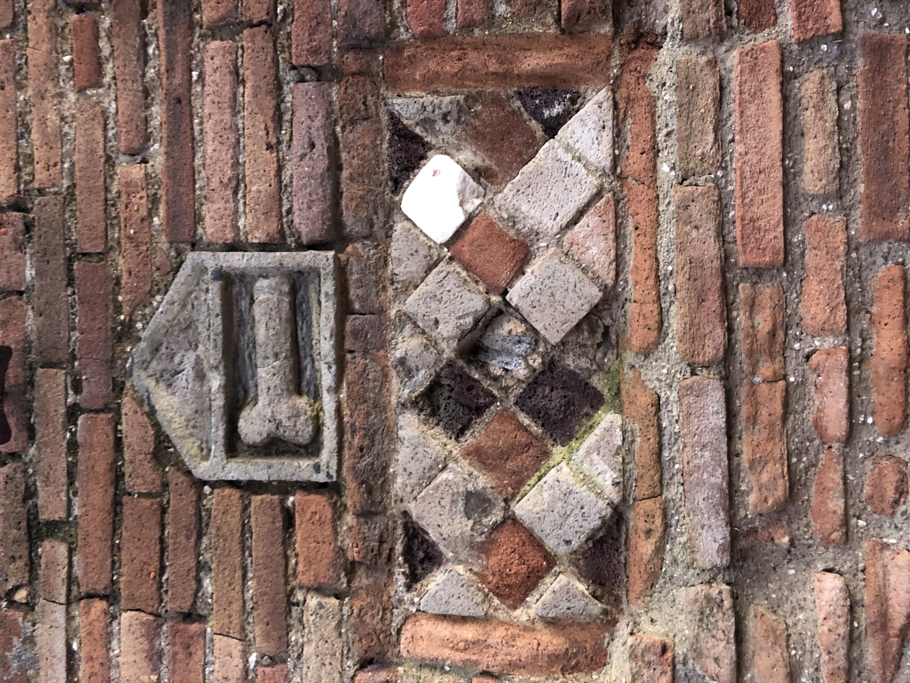

Some of the things you will find in Pompeii
except the obviously amazing villas, theatres, temples etc.

Mosaics
Remarkable mosaics, along with frescoes, can be seen decorating floors or walls in both private and public spaces

Thermopolium
Ancient bar-like restaurants directly facing the streets that served food to most of its residents

Phallus
There are many phalluses throughout the city, so keep your eyes open and prepare to have some fun